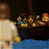
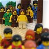

|
|
|
John 6
|
|
| 6:1
After these things Jesus went over the sea of Galilee, which is the sea of
Tiberias. |
|
| 6:2
And a great multitude followed him, because they saw his miracles which he
did on them that were diseased. |
|
| 6:3
And Jesus went up into a mountain, and there he sat with his disciples. |
 (6:5-13) Jesus fed 5000 men (plus women and children)
with five loaves and two fishes (with 12 baskets left over). (6:5-13) Jesus fed 5000 men (plus women and children)
with five loaves and two fishes (with 12 baskets left over).
(6:5) "Jesus ... saw a great company come unto him, he saith unto Philip, Whence shall we buy bread, that these may eat?"
|
| 6:4
And the passover, a feast of the Jews, was nigh.
|
| 6:5
When Jesus then lifted up his eyes, and saw a great company come unto him,
he saith unto Philip, Whence shall we buy bread, that these may eat?
|
| 6:6
And this he said to prove him: for he himself knew what he would do. |
|
| 6:7
Philip answered him, Two hundred pennyworth of bread is not sufficient for
them, that every one of them may take a little. |
|
| 6:8
One of his disciples, Andrew, Simon Peter's brother, saith unto him, |
(6:8-9) "Andrew, Simon Peter's brother, saith unto him, There is a lad here, which hath five barley loaves, and two small fishes."
|
| 6:9
There is a lad here, which hath five barley loaves, and two small fishes:
but what are they among so many?
|
| 6:10
And Jesus said, Make the men sit down. Now there was much grass in the
place. So the men sat down, in number about five thousand. |
(6:10) "Jesus said, Make the men sit down ... So the men sat down, in number about five thousand."
|
| 6:11
And Jesus took the loaves; and when he had given thanks, he
distributed to
the disciples, and the disciples to them that were set down; and likewise of
the fishes as much as they would. |
(6:11) "Jesus took the loaves; and ... distributed to the disciples, and the disciples to them that were set down; and likewise of the fishes."
|
| 6:12 When they were filled, he said unto his disciples, Gather up the fragments
that remain, that nothing be lost. |
(6:12-13) "When they were filled ... they ... filled twelve baskets with the fragments of the five barley loaves."
|
| 6:13
Therefore they gathered them together, and filled twelve baskets with the
fragments of the five barley loaves, which remained over and above unto them
that had eaten.
|
| 6:14
Then those men, when they had seen the miracle that Jesus did, said, This
is of a truth that prophet that should come into the world. |
|
| 6:15
When Jesus therefore perceived that they would come and take him by force,
to make him a king, he departed again into a mountain himself alone. |
Jesus Walks on Water
|
| 6:16
And when even was now come, his disciples went down unto the sea,
|
| 6:17
And entered into a ship, and went over the sea toward Capernaum. And it
was now dark, and Jesus was not come to them.
|
| 6:18
And the sea arose by reason of a great wind that blew.
|
| 6:19
So when they had rowed about five and twenty or thirty furlongs, they see
Jesus walking on the sea, and drawing nigh unto the ship: and they were
afraid. |
(6:19) "They see Jesus walking on the sea."
|
| 6:20
But he saith unto them, It is I; be not afraid. |
|
| 6:21
Then they willingly received him into the ship: and immediately the ship
was at the land whither they went. |
|
| 6:22
The day following, when the people which stood on the other side of the
sea saw that there was none other boat there, save that one whereinto his
disciples were entered, and that Jesus went not with his disciples into the
boat, but that his disciples were gone away alone; |
|
| 6:23
(Howbeit there came other boats from Tiberias nigh unto the place where
they did eat bread, after that the Lord had given thanks:) |
|
| 6:24
When the people therefore saw that Jesus was not there, neither his
disciples, they also took shipping, and came to Capernaum, seeking for
Jesus. |
|
| 6:25
And when they had found him on the other side of the sea, they said unto
him, Rabbi, when camest thou hither? |
|
| 6:26
Jesus answered them and said, Verily, verily, I say unto you, Ye seek me,
not because ye saw the miracles, but because ye did eat of the loaves, and
were filled. |
|
| 6:27
Labour not for the meat which perisheth, but for that meat which endureth
unto everlasting life, which the Son of man shall give unto you: for him
hath God the Father sealed. |
|
| 6:28
Then said they unto him, What shall we do, that we might work the works of
God? |
|
| 6:29
Jesus answered and said unto them, This is the work of God, that ye
believe on him whom he hath sent. |
|
| 6:30
They said therefore unto him, What sign shewest thou then, that we may
see, and believe thee? what dost thou work? |
|
| 6:31
Our fathers did eat manna in the desert; as it is written, He gave them
bread from heaven to eat. |
|
| 6:32
Then Jesus said unto them, Verily, verily, I say unto you, Moses gave you
not that bread from heaven; but my Father giveth you the true bread from
heaven. |
|
| 6:33
For the bread of God is he which cometh down from heaven, and giveth life
unto the world. |
|
| 6:34
Then said they unto him, Lord, evermore give us this bread. |
|
| 6:35
And Jesus said unto them, I am the bread of life: he that cometh to me
shall never hunger; and he that believeth on me shall never thirst. |
|
| 6:36
But I said unto you, That ye also have seen me, and believe not. |
|
| 6:37 All that the Father giveth me shall come to
me; and him that cometh to me I will in no wise cast out. |
 (6:37) "Him that cometh to me I will in no wise cast out." (6:37) "Him that cometh to me I will in no wise cast out."
What must you do to be saved?
|
| 6:38
For I came down from heaven, not to do mine own will, but the will of him
that sent me.
|
| 6:39
And this is the Father's will which hath sent me, that of all which he
hath given me I should lose nothing, but should raise it up again at the
last day. |
|
| 6:40
And this is the will of him that sent me, that every one which seeth the
Son, and believeth on him, may have everlasting life: and I will raise him
up at the last day. |
(6:40) "Every one which seeth the
Son, and believeth on him, may have everlasting life."
What must you do to be saved?
|
| 6:41
The Jews then murmured at him, because he said, I am the bread which came
down from heaven.
|
| 6:42
And they said, Is not this Jesus,
the son of Joseph, whose father and mother we know? how is it then that
he saith, I came down from heaven? |
(6:42) "Is not this Jesus, the son of Joseph?"
The people of Nazareth, who knew Jesus well, did not believe in him.
|
| 6:43
Jesus therefore answered and said unto them, Murmur not among yourselves.
|
| 6:44
No man can come to me, except the Father which hath sent me draw him: and
I will raise him up at the last day. |
|
| 6:45
It is written in the prophets, And they shall be all taught of God. Every
man therefore that hath heard, and hath learned of the Father, cometh unto
me. |
(6:46) "Not that any man hath seen the Father."
Can God be seen?
(6:47) "He that believeth on me hath everlasting life."
What must you do to be saved?
(6:50) "This is the bread which cometh down from heaven, that a man may eat thereof, and not die."
What must you do to be saved?

The Flesh and Blood of Jesus
|
| 6:46
Not that any man hath
seen the Father, save he which is of God, he hath seen the Father.
|
| 6:47
Verily, verily, I say unto you, He that believeth on me hath everlasting
life.
|
| 6:48
I am that bread of life.
|
| 6:49
Your fathers did eat manna in the wilderness, and are dead.
|
| 6:50
This is the bread which cometh down from heaven, that a man may eat
thereof, and not die.
|
| 6:51
I am the living bread which came down from heaven: if any man eat of this
bread, he shall live for ever: and the bread that I will give is my flesh,
which I will give for the life of the world.
|
| 6:52
The Jews therefore strove among themselves, saying, How can this man give
us his flesh to eat? |

 (6:53-66)
(6:53-66)
Jesus says we must eat his flesh and drink his blood if we want to have eternal life.
This idea was just too gross for "many of his disciples" and "walked no more with him." (They are called Protestants nowadays.)
What must you do to be saved?
(6:53) "Except ye eat the flesh of the Son of man, and drink his blood, ye have no life in you."
(6:54) "Whoso eateth my flesh, and drinketh my blood, hath eternal life."
(6:55) "My flesh is meat indeed, and my blood is drink indeed."
(6:56) "He that eateth my flesh, and drinketh my blood, dwelleth in me, and I in him."
(6:57) "He that eateth me, even he shall live by me."
(6:60) "Many therefore of his disciples, when they had heard this, said, This is an hard saying; who can hear it?"
|
| 6:53
Then Jesus said unto them, Verily, verily, I say unto you, Except ye eat the flesh
of the Son of man, and drink his blood, ye have no life in you.
|
| 6:54
Whoso eateth my flesh,
and drinketh my blood, hath eternal life; and I will raise him up at the
last day.
|
| 6:55 For my flesh is meat indeed, and my blood is
drink indeed.
|
| 6:56 He that eateth my flesh, and drinketh my blood, dwelleth in me, and I in
him.
|
| 6:57
As the living Father hath sent me, and I live by the Father: so
he that eateth me, even he shall live by me.
|
| 6:58
This is that bread which came down from heaven: not as your fathers did
eat manna, and are dead: he that eateth of this bread shall live for ever.
|
| 6:59
These things said he in the synagogue, as he taught in Capernaum.
|
| 6:60 Many therefore of his disciples, when they had heard this, said, This is
an hard saying; who can hear it?
|
| 6:61
When Jesus knew in himself that his disciples murmured at it, he said unto
them, Doth this offend you? |
 (6:64-66) Jesus knew who could stomach the idea of eating his flesh and drinking his blood (the
Catholics, who are going to heaven) and who couldn't (the Protestants, who are going to hell). It's all a part of God's plan
and we have nothing to do with it. (6:64-66) Jesus knew who could stomach the idea of eating his flesh and drinking his blood (the
Catholics, who are going to heaven) and who couldn't (the Protestants, who are going to hell). It's all a part of God's plan
and we have nothing to do with it.
(6:64) "But there are some of you that believe not. For Jesus knew from the beginning who they were that believed not."
(6:65) "No man can come unto me, except it were given unto him of my Father."
(6:66) "From that time many of his disciples went back, and walked no more with him."
|
| 6:62
What and if ye shall see the Son of man ascend up where he was before?
|
| 6:63
It is the spirit that quickeneth; the flesh profiteth nothing: the words
that I speak unto you, they are spirit, and they are life.
|
| 6:64
But there are some of you that believe not. For Jesus knew from the
beginning who they were that believed not, and who should betray him.
|
| 6:65
And he said, Therefore said I unto you, that no man can come unto me,
except it were given unto him of my Father.
|
| 6:66 From that time many of his disciples went back, and walked no more with
him.
|
| 6:67
Then said Jesus unto the twelve, Will ye also go away? |
|
| 6:68
Then Simon Peter answered him, Lord, to whom shall we go? thou hast the
words of eternal life. |
|
| 6:69
And we believe and are sure that thou art that Christ, the Son of the
living God. |
|
| 6:70
Jesus answered them,
Have not I chosen you twelve, and one of you is a devil? |
(6:70) "Have not I chosen you twelve, and one of you is a devil?"
Jesus chose "a devil" for an apostle. Oh well, everyone makes mistakes.
|
| 6:71
He spake of Judas Iscariot the son of Simon: for he it was that should
betray him, being one of the twelve.
|
|
Previous Chapter | Next Chapter
- Dwindling in Unbelief
- 178 ways to get yourself saved
(John 6:37, 47, 50, 53)
- What does God look like (according
to the Bible? (6:46)
|